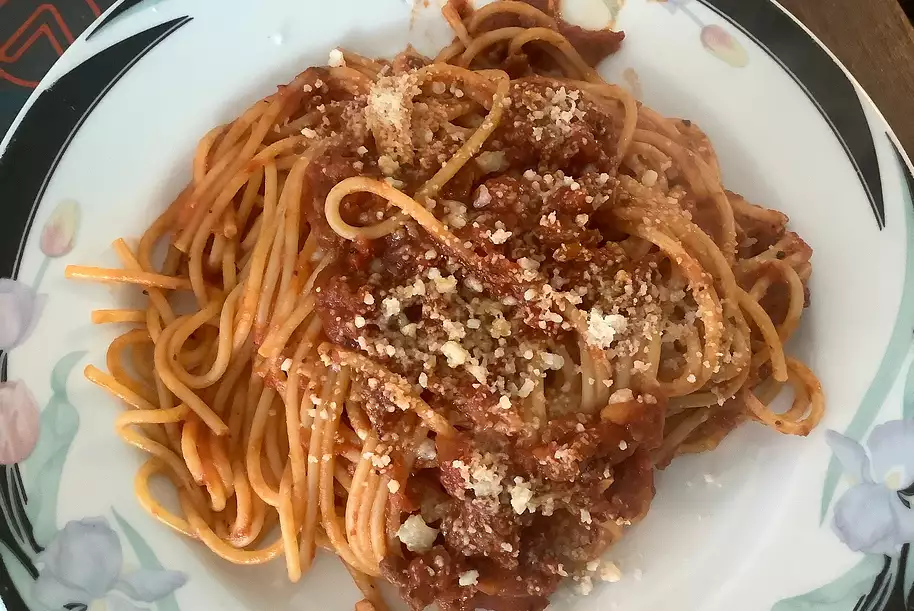

Spaghetti
Spaghetti,Get Ready!

Today we are going to engaging in some spaghetti.
Let it be known that this dish will last the remainder of the week.
Alright let's round up this ingriedients.
Ingriedients
The list is not extravagent, but it is long
- Cooking Spray
- 1(16 ounce)package spaghetti
- 2 pounds ground beef
- 1/4 cup chopped onion
- 2(26.5 ounce)cans meatless spaghetti sauce
- 2 cups shredded mozzarella cheese, divided
- 1/2 cup parmesan cheese
- salt and black pepper to taste
Now that we've tracked down all the neccessary ingriedients, its time to put a plan into action with some guidance, you will enjoying a great and repeatable dinner.
Steps
- Preheat oven to 350 degrees F(175 degrees C).Grease a deep a deep 9x13-inch baking dish with cooking spray
- Bring a large pot of salted water to a boil over high heat, stir in spaghetti.
- Boil pasta until cooked through but still firm to the bite for 8 to 10 mins, then drain well.
- Brown ground beef and onion in a large skillet over high hear;drain fat.
- Stir in spaghetti sauce, sour cream, and 1 cup mozzarella, Mix in the cooked pasta.
- Transer pasta mixture to prepared baking dish. Top with remaining 1 cup mozzarella and parmesan cheese, cover pan with aluminum foil.
- Bake in preheated oven until hot and bubbly, about 30 minutes.
If you fancy bread add any type of bread to the mix and viola; gourmet eating at it finest.
Thanks for Reading!
Return to main page